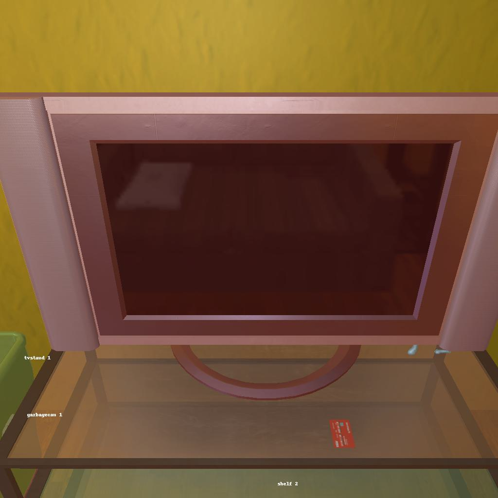

---------------------------------------------------------task: 3---------------------------------------------------------
--------------------------------------------------------------------------------------------------------------------------------------------------------------------
--------------------------------------------------------------------------------------------------------------------------------------------------------------------
Step:--------------------------------------------------------------------------1-------------------------------------------------------------------------------
----------------------------------------
VLM Prompt:
Image1:
Image2:
**Instruction**
1. Analyze the provided image to identify all visible household objects, focusing on those relevant to the task description "look at plate under the floorlamp."
2. Use the analysis of the image and the task hint "The agent must find an object of the desired type, locate and turn on a light source with the desired object in-hand." to answer the question: what is the most reasonable action in the choices for the task description "look at plate under the floorlamp"?
4. Decide and write the answer using the template: The answer is: (i): , where i is the real number. If there is no desired object in the image, search every place based on **Initial Observation** to find the object. And if no one is exactly correct, choose a similar answer.
**Initial Observation**
You are in the middle of a room. Looking quickly around you, you can see armchair (1), garbagecan (1), tvstand (1), shelf (1-5), sofa (1), coffeetable (1), sidetable (1-2), drawer (1)
**Answer Choices**
(1): go to armchair 1
(2): go to garbagecan 1
(3): go to tvstand 1
(4): go to shelf 1
(5): go to shelf 2
(6): go to sofa 1
(7): go to coffeetable 1
(8): go to sidetable 1
(9): go to sidetable 2
(10): go to drawer 1
(11): go to shelf 3
(12): go to shelf 4
(13): go to shelf 5
**Answer**
Let's think step by step by following the instructions.
----------------------------------------
----------------------------------------
Original Response:
Firstly, we must identify all visible household objects in the image. We can see a tvstand labeled "tvstand 1", a shelf labeled "shelf 2", and a garbagecan labeled "garbagecan 1". There is no visible floorlamp or plate in the image provided.
Next, we must use the analysis of the image and the task hint to decide the most reasonable action for the task description "look at plate under the floorlamp." The task hint suggests that the agent must find an object of the desired type (a plate) and locate and turn on a light source (a floorlamp) with the desired object in-hand.
Based on the **Initial Observation** and the fact that we cannot see a floorlamp or a plate in the image, we must search every place to find the object. Since none of the answer choices directly mention a floorlamp or a plate, we must choose the option that is most likely to be near the floorlamp based on typical room arrangements.
The answer is: (10): go to drawer 1. This choice is made because floorlamps are often placed next to furniture like sofas or armchairs, and the drawer may contain objects such as plates that are not in immediate view.
----------------------------------------
----------------------------------------
>>> Refine Original VLM Response and Get Pure Action: go to drawer 1
----------------------------------------
-----------------------------------------------------------------
Running time: 36.52423071861267 seconds
Total Money: 1.1870000000000003
-----------------------------------------------------------------
-----------------------------------------------------------------
Text Observation:You arrive at loc 9. The drawer 1 is closed.
-----------------------------------------------------------------
UNSUCCEED